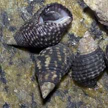
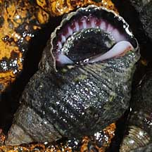
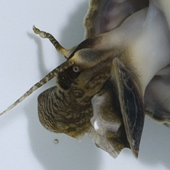
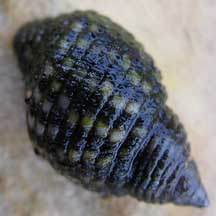

|
|
| shelled snails text index | photo index |
| Phylum Mollusca > Class Gastropoda |
| Planaxis
snail Planaxis sulcatus Family Planaxidae updated Sep 2020 Where seen? This large 'groovy' snail is commonly seen, usually in clustered together in large numbers, on rocky shores and seawalls on our Southern shores. Elsewhere, it is called clusterwink for this grouping habit. It is not active at low tide but disperses to feed at high tide. Features: 2-2.5cm. Shell thick with strong squarish spiralling cords (Sulcus means 'grooved'). Colour blackish to cream sometimes with white or yellowish spots. Shell opening wide, inner surface white sometimes with dark purple grooves. Operculum thin, horn-like material and dark coloured. Body pale, small foot with a pale underside dark mottled pattern above, long tentacles with dark bands. Sometimes confused with Periwinkle snails which are found in similar habitats. But Periwinkles are much smaller, have thinner shells and don't have strong spiralling cords like the Planaxis snail. |
 Sisters Islands, Feb 06 |
 Pulau Semakau, May 08 |
 Pulau Jong, Jul 12 |
| Baby planaxis: The female broods her young. Fertilisation is internal and the mother snail has a special brood pouch in the foot where the embryos
are reared before they are released into the water as free-swimming larvae. What does it eat? It grazes on microalgae growing on the rocks. Status and threats: Planaxis snails are not listed among the threatened animals of Singapore. However, like other creatures of the intertidal zone, they are affected by human activities such as reclamation and pollution. Trampling by careless visitors can also have an impact on local populations. |
| Planaxis snails on Singapore shores |
On wildsingapore
flickr
|
| Other sightings on Singapore shores |
 Pulau Jong, Nov 08 |
| Family
Planaxidae recorded for Singapore from Tan Siong Kiat and Henrietta P. M. Woo, 2010 Preliminary Checklist of The Molluscs of Singapore.
|
|
Links
References
|